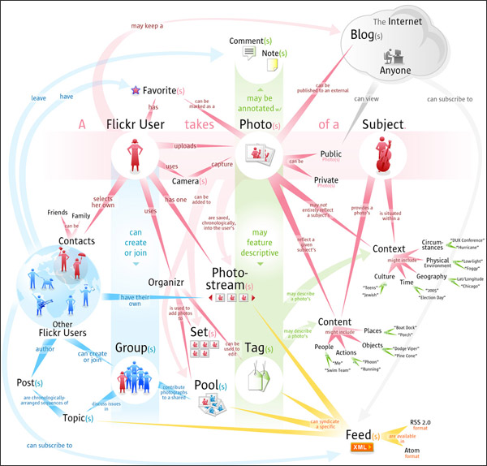

从三月份开始持续的一个项目实训终于在前天通过了最后一个的答辩环节。我们的项目不算出彩，一个学期的过程当作是学习的经历和合作的过程却还是有所收获。
三月的几天里全组在赶UC，临近评审的那个星期的周二晚上三个女生赶到晚上2点。周五晚上她们仨又一直做到夜里一点半，Huang做到2点。Liu整理文档一直到夜里的4点。3月28日，当需求评审结束的时候，心底对当天的表现是不太满意的。无论是我还是组员都没有发挥好。对一些客观因素也颇有怨言，比如时间被挤压。
当天晚上准备好好找一篇文沉浸一下，在QQ上遇见Chen，和她聊了一会，从小说到武侠，突然，她插了一句：“今天给你丢脸了。”那一瞬间有点愧疚，毕竟大家谁都是想表现到最好的。而她这句平常的话语也让我突然就十分感动。这是我们这个小集体的团队精神，也是我从小到大从没有真正身在其中的集体荣誉感。把QQ签名换做了“让我小热血下”表达心情。
接下来的一段时间是设计。说实话，这段时间的安排有点懈怠，从项目管理的角度来说应该算是失败的。有两个原因：一是由于前一段的需求做地太累太赶，导致了这里有点想放松的小念头；二是需求被裁地太多太狠，想到有一些无用功的付出难免有点被打击了积极性。而或许，也有点因为这段时间不需要交阶段性的文档。
之后是两女生去搭环境，我和Liu去学习框架。差距应该就是从这里开始体现。我们小组没有日常使用Linux的组员，也没有人之前有过Spring或者Hibernate的实践经验。我们需要花一些额外的时间学习最后优秀的那组本已有的知识点。打好基础，到后面开始动手编码已经是四月的末尾了。还记得大家拿到了各自的任务，说五一回家可以抽一点时间去做。然后那天下午一起登上回家的车，路上相互发发短信，开心地像是暂时从烦乱的工作中脱身出来。
最累的是开发阶段的开发组。而其中又首推对编码有着狂热和偏执爱好的Hxx。但也是她那股坚忍和刚毅的精神鼓励着大家坚持到最后的完成。
五月中旬，提交测试。期间去了一趟指导老师那里，把东西拷给他看，在评说TC的时候，翟提的一个个问题，扭头等着我意料之中的否定答复。一点点的力气被抽离。思量不细，漏洞太多，我很窘迫。这也是闭门造车后的第一次横向比较，并发现了和佼佼者的差距。从需求到开发的两个月里，全组的成员都是投入了大量的精力想把这个事情做好。此时临近结束，成绩平平几成定局。这样的评价实在太让我灰心和丧气。那天下午从郁文回来全身瘫软，一言不发地倒头便睡。
是由于以前没有参加过相关项目的经验，我们组在基础上是落后了一些。当我们在花精力学习Spring和ibatis的时候，他们甚至可以轻车熟路地架设了框架，转而去学习一些具体而微的技术。我们的项目在老师看来很是一般，殊不知就是这点一般的东西，也折腾到我们够呛，毕竟算是从零开始。过程中学习的东西不可谓不多，只是比不上别人高屋建瓴。
沮丧于我们的努力得不到别人的认可。
之后的两周，测试组进行了两轮功能性测试。我不得不愧疚地承认：项目管理部分，到这里的时候，已经全无章法了。
5月22日，提交项目的全部代码和全部过程文档。项目进入冻结状态等待最后的验收和答辩。
一直到前天的验收，我们完整地见到了所有小组中最强的“像素”。确实很强大！期间和也和翟聊到，相对于他们3+2的优秀，软工专业的反而普遍在这次的实训中都不怎么出彩。可能也是因为培养模式上的侧重不同吧。有将近一半的人由于这样那样的原因没有参加今天的项目答辩，相较于此，我们组7 / 8的出席率还是说明态度很端正的。呵呵
晚上在食堂三楼聚餐，算是开心地将Glitter画上一个句号。
结束了，但是过程令人难忘。记得做UC时候几个人熬夜到夜班赶着修改，记得设计阶段和开发的部署阶段焦躁地睡不饱一个囫囵觉，记得后面Hxx每跨过一个技术要点而电话过来说“解决了”时候的喜悦。这次算打个基础，希望以后的学习和实践中可以汲取这次的经验。
回想起刚开始做的需求，难免有点感觉狮子大张口的可笑。当时拿了Flickr来做借鉴。几天前找到了一张Flickr的领域模型，放图对比。

Glitter是一个实践性的网络相册网站。在Linux系统开发和部署，采用Oracle作为数据库，JBoss作为应用服务器。应用的框架集有Spring MVC、Spring和iBatis。